Misc
约 6316 个字 9 行代码 11 张图片 预计阅读时间 22 分钟
7-4 lec3-Misc¶
授课：goduck
什么是Misc¶
- 杂项 ALL-PWN-WEB-CRYPTO - REVERSE
- 隐写、取证、OSINT（信息搜集）、PPC（编程类） ——传统 misc 题
- 游戏类题目（大概也算 PPC）、工具运用类题目
- 编解码、古典密码 ——不那么 crypto 的 crypto
- 网络解谜、网站代码审计 ——不那么 web 的 web
- 代码审计、沙箱逃逸 ——不那么 binary 的 binary
- Blockchain、IoT、AI ——新兴类别题目
编码基础¶
- 一切信息在计算机看来都是 0 和 1
- 编解码 / 加解密 / 哈希都是在 01 串之间进行的变换
- 为什么你看见的输入输出是字符？
- 计算机通过字符编码规则将 01 串转换为了可见字符
- 三种常见的01串转换方式
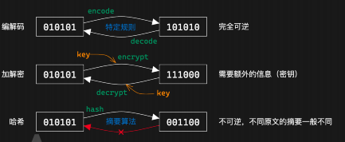
- 常用的解码工具 CyperChef
为什么会乱码¶
-
字符编码：人类理解的字符 > 计算机理解的 01 串 之间的映射
-
为什么会出现乱码：用一种字符编码规则解读另一种字符编码的 01 串 ；A0-FF：可见字符
- 特点：任何字节流都可以用其解码
- 利用 Unicode 字符集的
- 常见的字符编码：
- ASCII：一共 128 个项，即每个字符可以用一个 7 位的 01 串表示（或一字节）
- 00-1F：控制字符；20-7E：可见字符；7F：控制字符（DEL）
- Latin-1（ISO-8859-1）：扩展了 ASCII，一共 256 个项
- 80-9F：控制字符一系列编码
- UTF-8 / UTF-16 / UTF-32 / UCS
- 中国国标字符集系列编码
- GB 2312 / GBK / GB 18030-2022
怎么就乱码了¶
几个字符集不兼容的部分互相编解码，常见的：
- 用 GBK 解码 UTF-8 编码的文本
- 用 UTF-8 解码 GBK 编码的文本
- 用 latin-1 解码 UTF-8 编码的文本
- 用 latin-1 解码 GBK 编码的文本
- 先用 GBK 解码 UTF-8 编码的文本，再用 UTF-8 解码前面的结果
- 先用 UTF-8 解码 GBK 编码的文本，再用 GBK 解码前面的结果
- 这里我们请同学们自行研究，lab 中会用到（后续详细发布），几种推荐的方式：
- CyberChef，通过 Input 和 Output 窗口的字符集设置
- 需要注意，CyberChef 的 UTF-8 不会将错误解码替换为 �（非预期）
- vscode 右下角的编码方案（重新打开 / 用编码保存）
- 必要的时候可以使用 python 来进行编解码 / 进制转换等
摩斯电码¶
前面说到的字符编码：01 串 > 字符；接下来看另一种：字符 > 字符
- 摩尔斯电码（Morse Code）：利用点划（“滴”的时间长短）来表示字符
- 点 ·：1 单位；划 -：3 单位
- 点划之间间隔：1 单位；字符之间间隔：3 单位；单词之间间隔：7 单位
- 字符集：A-Z、0-9、标点符号（.:,; ='/!-_"()$&@+）、一些电码专用表示
- 表示中文：电码表（一个汉字对应四个数字），数字使用短码发送 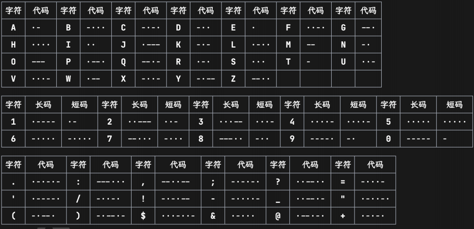
BASE编码¶
- Base16：即 16 进制表示字节流，长度翻倍
- Base32：按照 5 bit 一组（每个 0-31），按照字符表（A-Z2-7）映射
- 结果长度必须是 5 的倍数，不足的用 = 不齐（明显特征）
- Base64：按照 6 bit 一组，按照字符表映射（最常用）
- 标准字符表：A-Za-z0-9+/
- 另有多种常用字符表，如 URL 安全字符表：A-Za-z0-9-_
- 结果长度必须是 4 的倍数，不足的用 = 不齐（1~2 个，明显特征）
Base-n 系列的本质：¶
- 字节流 > 整数 > n 进制 > 系数查表 所以除去前面规则的 16/32/64 进制，还有一些其他的 Base 编码：
- 分组：
- Base85：4 字节整数 > 85 进制 > 5 个系数
- 常用字符表：0-9A-Za-z!#$%&()*+-; >?@^_`{ }~
- 标准字符表：!-u（ASCII 编码中 0x21-0x75）
- 作为大整数转换进制：
- Base62：0-9A-Za-z（比 Base64 少了 +/）
- Base58：0-9A-Za-z 去除 0OIl
- Base56：比 Base58 少了 1 和 o
- Base36：0-9A-Z（比 Base62 少了 a-z）
OSINT 基础¶
我要成为开盒糕手！
- Open Source INTelligence：开源网络情报
通过完全公开的信息进行合理的推理，获取情报 一般在 misc 题目中出现即泛指信息搜集，有几种情况： - 构造了一个全新的虚拟身份，搜集得到出题人准备好的信息 - 根据图片、文档等附件泄漏的信息进行推理（主要） - 包括根据图片内容推理找到拍摄位置、当时环境等信息
信息搜集¶
文件信息泄露¶
- 各种文档的元信息（metadata）可能包括作者、修改时间等信息
- 图片的 EXIF 信息，可通过 exiftool 查看一般以 xml 形式存储，可以直接通过二进制抹除，或者通过操作系统
- 工程文件夹泄漏信息
- Visual Studio 的各种配置文件，.vs 文件夹中信息
- .vscode 文件夹中的配置文件
- .git 文件夹，泄漏全部修改历史、提交信息、提交者等 文件夹路径信息泄漏
- .DS_Store 文件，macOS 下的文件夹布局信息
前面各种工程配置文件等也会泄漏（比如 vs 的 pdb 调试信息） markdown 文件图片路径（本地路径 / 图床用户 / 自建图床网站）
照片信息分析¶
- 识图
- 属性
- 地标
- 天气信息，云层信息，估计方向，位置，时间等
- 风景信息，Yandex搜索
7-9 Misc专题1¶
授课: 45gfg9
长沙，好玩；上课，不好玩
Part1:文件系统基础¶
文件如何存储¶
- 不同的文件系统，不同的组织方式
- MS 派：FAT、NTFS、exFAT、ReFS
- Apple 派：HFS、APFS
- Linux 派：ext[234]、XFS、Btrfs、ZFS...
- 文件是一串二进制数据
- 在 HDD 上是微小磁极的磁化方向
- 在 SSD 上是电荷的存储状态
- “文件名”是由文件系统管理的，不是文件本身数据的一部分
- 文件系统会记录文件名、文件大小、创建时间、修改时间等信息
- 文件内容才是真正的数据
如何判断文件类型¶
- 扩展名
- .jpg , .webp,.txt,.docx
- 是文件名的一部分，可以随意修改
- 决定了打开文件的默认程序
- 内容
- 通过文件内容来识别文件类型
file命令- 不同文件类型有不同的magic number
二进制查看文件与分析¶
- 010 Editor
- 全平台最常用的二进制编辑器，付费软件（但容易破解）
- 有丰富的 binary templates，支持解析多种文件格式
- wader/fg
- Go 编写的开源二进制文件查看工具
- 支持类似 jq 语法的查询
- Hex Fiend
- macOS 上免费开源高效的二进制编辑器
- 也有多种二进制格式的解析模板，但显示没有 010 丰富
- ImHex
- 全平台开源二进制编辑器
- 类似 010 Editor，但使用麻烦一些
- 可以编写自定义解析模板
文件类型检测与元信息¶
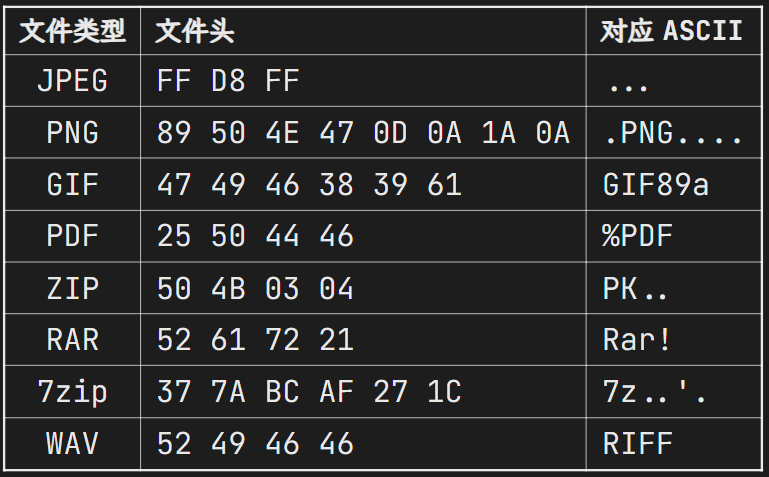
文件附加内容的识别与分离¶
- 大部分文件类型都有一个标记文件内容结束的标志
-
比如 PNG 的 IEND 块、JPEG 的 EOI 标志（FF D9）
-
所以一般在文件末尾添加其他字节时，不会影响原文件本身的用途
- 因此有些隐写是将数据隐藏在文件末尾达到的
- 或者在文件后叠加另一份文件
- cat cover.jpg secret.zip > cover_stego.jpg
- 附加内容的识别
- exiftool 一般可以识别图像文件后的附加数据
- binwalk 可以检测叠加的文件
- 附加文件的分离
- binwalk 或 foremost 识别并分离
- dd if=
of= bs=1 skip= 手动分离
Part2: 图像隐写基础技术¶
文件内容基本隐写¶
- 文件末尾添加数据
- exiftool 识别短数据，或者十六进制编辑器直接观察
- binwalk 识别叠加文件，foremost 提取
- 图像末尾叠加一个压缩包，就是所谓的“图种”
- 修改后缀名可能可以解压（部分解压软件会忽略前面的图像）
- 其实不如直接分离
- 直接利用元信息
- exiftool 即可读取
色彩空间、色彩模式¶
色彩空间（sRGB、Adobe RGB、Display P3 等）是一个相对非常复杂的概念，而且是针对显示的，我们不详细介绍
我们注重于表示颜色的数据上，一般称为色彩模式（color mode）：
- 二值图像（bitonal）：每个像素只有两种颜色，如黑白
- 灰度图像（grayscale）：每个像素有多种灰度，如 256 级灰度
- RGB(A)：3(+1) 通道，表示 RGB 三种颜色，A 表示透明度通道(印刷常用)
- CMYK：青 cyan、品红 magenta、黄 yellow、黑 black 四种颜色混合
- HSV：色调 hue、饱和度 saturation、明度 value
- HSL：色调 hue、饱和度 saturation、亮度 lightness
- YCbCr：亮度 luminance、蓝色色度 blue chroma、红色色度 red chroma
- LAB：亮度 lightness、绿红色度 A、蓝黄色度 B
- ...
LSB 隐写¶
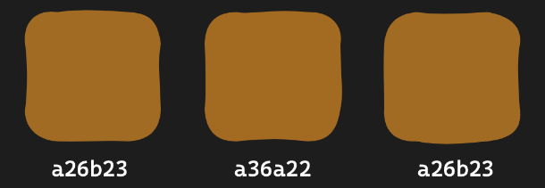
- 人眼对于微小的颜色变化不敏感
- 对于 8 bit 的颜色值，最低位的变化不会被察觉
- 可以随意修改最低位，而不影响图像的显示效果
- LSB 隐写将颜色通道的最低位用来编码信息
- 图像：stegsolve / CyberChef View Bit Plane
- 数据：stegsolve / CyberChef Extract LSB / zsteg / PIL
PIL 图像处理基础¶
PIL（Python Imaging Library）是 Python 中非常常用的图像处理库
- 安装：pip3 install pillow 或 apt install python3-pil
-
官方文档 / 教程：https://pillow.readthedocs.io/en/stable/
-
基本用法
- from PIL import Image 导入和图像读写处理有关的 Image 类
- img = Image.open(file_name) 打开图像
- img.show() 显示图像；img.save(file_name) 保存图像
- img.size 图像大小，img.mode 图像模式
- img.convert(mode) 转换图像模式
- img.getpixel((x, y)) 获取像素点颜色
- img.putpixel((x, y), color) 设置像素点颜色
- np.array(img) 将图像转换为 numpy 数组
-
具体图像模式以及转换
- '1'：黑白二值（0/255）；'L'：灰度（8 bit），'l'：32 bit 灰度
- L = 0.299 R + 0.587 G + 0.114 B
- 'P'：8bit 调色盘，获取的像素值是调色盘索引
- 'RGB'、'RGBA'
- 'CMYK'：转换时有色差，CMY = 255 - RGB，K = 0
- 'YCbCr'、'LAB'、'HSV' 等，转换时有复杂公式（可能出现新的隐写）
- PIL 其他模块用途
- ImageDraw 用于绘制图像、绘制图形
- ImageChops 用于图像通道的逻辑运算
- ImageOps 用于图像整体的运算一类
- ImageFilter 用于图像的滤波处理
Part3:图像格式介绍¶
图像存储¶
- 图像信息：宽高、色彩模式、色彩空间等
- EXIF 信息：拍摄设备、拍摄时间、GPS 信息等
- 像素数据：每个像素的颜色信息；二值、灰度、RGB、CMYK、调色盘等
- 对于标准 RGB 图像，每个像素需要 24 bits(RGB三个字节，可能有A)
- 对于一张 1080p 图像，需要 6.22 MB(RGB)，4K 则需要 24.88 MB(RGBA)
- BMP 格式
- 压力给到了图像格式的压缩算法
- PNG 无损，JPEG 有损
- GIF 有损且只支持 256 色
- 新兴格式如 HEIF、WebP、AVIF 等
JPEG 文件格式¶
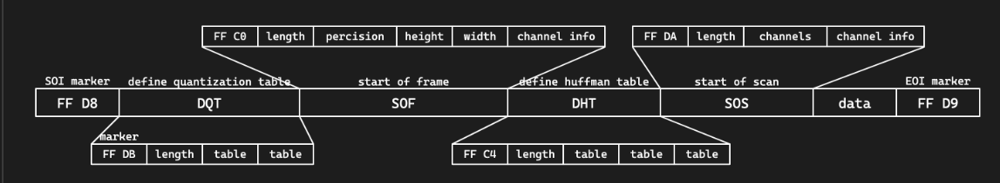
JPEG 使用分段的结构来进行存储，各段以 0xFF 开头，后接一个字节表示类型：
- FFD8（SOI）：文件开始
- FFE0（APP0）：应用程序数据段，包含文件格式信息（上图没有）
- FFE1（APP1）：应用程序数据段，包含 EXIF 信息（上图没有）
- FFDB（DQT）：量化表数据
- FFC0（SOF）：帧数据，包含图像宽高、色彩模式等信息
- FFC4（DHT）：huffman 表数据
- FFDA（SOS）：扫描数据，包含数据的扫描方式，huffman 表的使用方式等
- FFD9（EOI）：文件结束
#### JPEG压缩原理 - JPEG 的压缩原理是 DCT（离散余弦变换）+ Huffman 编码 + 由 RGB 转换到 YCbCr，然后减少 Cb、Cr 的采样率 + 将图像分块，每个块 8x8，进行 DCT 变换 - 将图像转换为频域，便于压缩高频部分 - 量化，将 DCT 变换后的系数除以量化表中的系数 + 再次减少高频部分的数据 + 根据不同的量化表，可以调整压缩质量 - 通过游程编码和 huffman 编码进行压缩
PNG文件格式¶
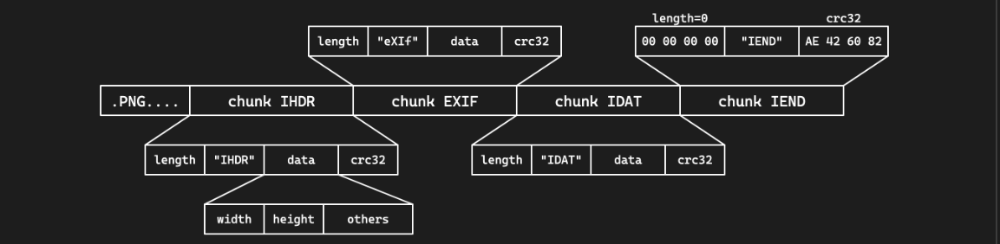
- 文件头 89 50 4E 47 0D 0A 1A 0A | .PNG....
- 采用分块的方式存储数据
- 每块的结构都是 4 字节长度 + 4 字节类型 + 数据 + 4 字节 CRC 校验
- 四个标准数据块：IHDR、PLTE、IDAT、IEND
- 其他辅助数据块：eXIf、tEXt、zTXt、tIME、gAMA……
- eXIf 元信息，tIME 修改时间，tEXt 文本，zTXt 压缩文本
四种标准数据块：
- IHDR：包含图像基本信息，必须位于开头
- 4 字节宽度 + 4 字节高度
- 1 字节位深度：1、2、4、8、16
- 1 字节颜色类型：0 灰度，2 RGB，3 索引，4 灰度透明，6 RGB 透明
- 1 字节压缩方式，1 字节滤波方式，均固定为 0
- 1 字节扫描方式：0 非隔行扫描，1 Adam7 隔行扫描
- PLTE：调色板，只对索引颜色类型有用
- IDAT：图像数据，可以有多个，每个数据块最大 2 31 -1 字节
- IEND：文件结束标志，必须位于最后，内容固定
- PNG 标准不允许 IEND 之后有数据块
PNG压缩原理¶
- PNG 使用 Deflate 压缩算法
- 是 LZ77 结合 huffman 编码的一种压缩算法
- LZ77：利用滑动窗口，找到最长的重复字符串，用指针和长度表示 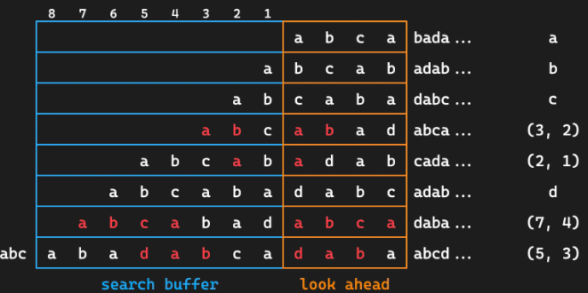
- 会进行滤波，减少数据的冗余性，提高压缩率
- 五种滤波器：None、Sub、Up、Average、Paeth
Part4:隐写进阶技术¶
图像大小修改¶
- PNG 图像按行进行像素数据的压缩，以及存储 / 读取
- 当解码时已经达到了 IHDR 中规定的大小就会结束
- 因此题目可能会故意修改 IHDR 中的高度数据，使之显示不全
- 恢复的话更改高度即可，同时注意 crc 校验码，否则可能报错
- binascii.crc32(data)，data 为从 IHDR 开始的数据
- 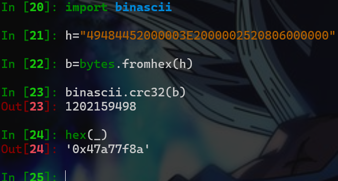
需要原图的图像隐写¶
有些情况下的图像隐写需要原图才能解密，这时第一步一般是 OSINT 搜索原图
- 使用识图工具进行搜索
- 一般需要搜原图的题题目描述会带有来源暗示之类的
-
多注意搜到的图像大小、质量，确保是真正的原图 接下来利用原图和隐写图像的差异进行分析
-
图像像素异或观察差异
- PIL 手动处理 / ImageChops.difference
- stegsolve image combiner 盲水印系列
- 给了打水印的代码的话直接尝试根据代码逆推即可
- 没有给代码的可能就是常见的现有盲水印工具
-
工具steghide、stegoveritas、SilentEye
音频文件格式简介¶
音频类题目其实并不常出：
- mp3：有损压缩
- 具体格式不多介绍，遇到了基本上也就是声音本身的隐写
- wav：无损无压缩（waveform）
- 直接存储的是音频的波形数据，可操作性更高
- 文件结构也是分 chunk 的，有 RIFF、fmt、data 等
- 编码音频数据的 sample 也可以进行 LSB 隐写
- flac：无损压缩，如果出现可能考虑转换为 wav
- 使用 Python 的 soundfile / librosa 库进行音频处理
- 频谱隐写
- 音频叠加
- 如果可以找到原音频，或提供了原音频，可以进行比较
- 方法是在 Audition 中创建多轨会话
- 将两个音频拖入两个轨道
- 效果 > 匹配响度，将两条音轨的响度匹配
- 点进其中一条音轨，效果 > 反相，将波形上下颠倒
- 两条音轨匹配上波形之后播放 / 混音，就能听到差异了
其他Misc题目¶
ZIP伪加密¶
- ZIP 也使用分段的方式存储数据
- 本地文件记录 50 4B 03 04，可以有多个
- 中央目录记录 50 4B 01 02，可以有多个
- 中央目录结束 50 4B 05 06
- 在中央目录记录中有一个字段记录加密方式
- 如果不为 0 表示有加密
- 其他字段，如最小版本
- 可能修改为一个不合法的值，无法用解压软件解压
沙箱逃逸和 PPC¶
- 沙箱：做了某些限制的隔离环境
- 例如 Docker，或一个沙箱程序，如 rbash
- Python 解释器也可以作为一个沙箱
- 通过限制模块、限制函数、代码审计等方式
-
沙箱逃逸就是在沙箱中执行代码，获取到沙箱外的权限
- Python 的 os 及 importlib 模块是常见的逃逸点
-
PPC 题较为不常见
- 一般是限制代码长度 / 汇编指令，要求实现某个功能
7-9 Misc专题2¶
授课：TonyCrane
Part1:流量取证¶
流量取证基础¶
- 网络流量（ > 回顾 web 基础）
- 应用层（HTTP/FTP/ .） > 表示层 > 会话层（SSL/TLS/ .）
-
传输层（TCP/UDP） > 网络层（IP/ICMP/ .）
-
数据链路层 > 物理层
- 最终传输的仍然是二进制数据
- 捕获这些数据，就可以分析得到正在进行的通信内容
- 流量取证一般就是拿到这些数据包（cap、pcap、pcapng 格式）进行分析
- 如有损坏的话修复数据包（少见，pcapfix 可以修复）
- 分析、提取得到正在通信的内容（可能包含有效信息）
- 分析一些特定的、不太常见的协议（比如一些自定义协议）
- 分析、解密一些加密的协议（比如 VMess 等）
流量取证常用工具¶
- tcpdump 抓 TCP 包（Linux 命令行）
- Wireshark：直接抓包，得到物理层的全部数据并解析（开源）
- 自带命令行工具 tshark
- termshark：类似 Wireshark 的开源命令行工具
- pyshark：tshark 的 Python 封装，可以用 Python 脚本分析
- scapy：Python 库，也可以用来分析流量包
Wireshark 基本用法
- 浏览主界面的所有数据包，大致了解都由什么协议组成
- 追踪流（追踪 TCP 流 / 追踪 HTTP 流）
- 得到某次通信的全部数据包，并进行解析
- 另存为，保存流数据
- 可以转换不同的显示形式（ASCII、HEX、Raw）
- 文件 > 导出，提取某些数据包的流内容
- 统计部分
- 协议层次：统计各层协议的数据包数量
- 流量图：统计各个端口的流量，可视化显示
- HTTP：分组计数、请求统计
Wireshark 过滤器
- 过滤协议：直接输入 tcp/udp/http 等
- 过滤 ip：ip.addr = xx.xx.xx.xx 或 ip.src ip.dst
- 过滤端口：tcp.port = 80 或 tcp.srcport tcp.dstport
- 包长度过滤：frame.len ip.len tcp.len ……
- http 过滤
- http.request.method = GET
- http.request.uri = "/index.php"
- http contains "flag"（相当于搜索功能）
HTTP协议流量分析
- 分析统计信息
- 查看所有的 HTTP 请求 URI
- 分析 HTTP 往返的情况，流量整体信息
- 具体分析某些请求：利用过滤器
- 分析某一数据包具体内容
- 跟踪流，跟踪 TCP 解析 TCP，跟踪 HTTP 可以自动解压 gzip 等
- 分析请求头、响应头、请求体、响应体等
UDP 协议
-
UDP 协议是无连接的，不需要像 TCP 一样三次握手
-
和 TCP/HTTP 一样直接追踪分析就可以
- 常见的基于 UDP 的协议：DNS
-
具体题目示例
-
本次 lab 中的题目：dnscap
-
MRCTF 2022：Bleach!
- 基于 UDP 的 RTP 协议，需要手动选择进行解析
- RTP 是一种音视频传输协议，可以得到音频流
- wav 音频流中 LSB 包含隐写图片
-
其他协议
- ICMP 协议：ping
- 某时也会带有一些信息，可以进行进一步分析
-
OICQ 协议：QQ 使用，是加密的，但是可以看到双方 QQ 号等
-
WIFI 协议（IEEE 802.11）
- 可以使用 Linux aircrack 套件爆破密码
- 有了密码后可以在 Wireshark 中设置并解密流量
- USB 协议
- 安装了 USBcap 之后可以在 Wireshark 中捕获 USB 流量
- 有工具可以解析流量，绘制鼠标轨迹，得到按键信息等
- 其他加密协议
- VMess，需要读文档 / 源码，实现解密
Part2:以太坊区块链基础¶
以太坊模型全览¶
区块与世界状态
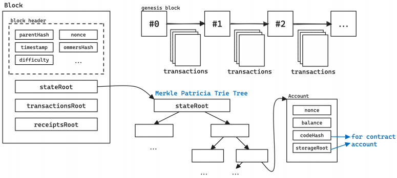 - 每个区块包含三颗 Merkle 树根节点 - stateRoot 即世界状态树根节点，状态是一组用户状态的组合 - 区块由“矿工”或“验证者”将交易打包形成，后广播到网络中 - 每条交易会引发世界状态的转变，消耗一定 gas
交易与世界状态转变
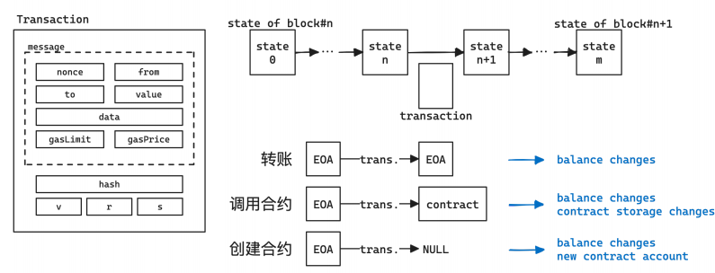 - 每一条交易都会引起状态的改变 - 多个交易打包到一起，最终状态就是新区块存储的状态 - 交易信息中包含 hash/v/r/s 为交易签名，用于验证交易的合法性 - 合约在 EVM 上执行，执行过程中也有各种漏洞
账户与交易¶
账户
- 外部账户（Externally Owned Account）
- 有一对公私钥，用于签署交易
- 私钥是随机生成的 256 位数（32 字节）
- 公钥由私钥经过 ECDSA 算法计算而来，是一个 64 字节的数
- 地址由公钥经过 Keccak-256 哈希后取前 20 字节得到
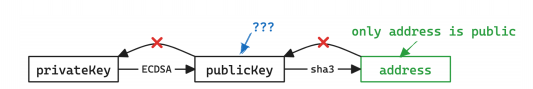
- 合约账户（Contract Account）
- 由 EOA 通过交易创建的账户，其中包含合约代码
- 合约可以存储、拥有以太币
- 向合约账户发送交易 > 调用合约中的函数
- 合约本身不能主动发起交易，但可以在被调用时向外发送交易
交易
- 一条交易包含以下内容：
- from：交易发送者地址
- to：交易接收者地址，如果为空则表示是在创建智能合约
- value：交易金额，即发送方要给接收方转移的以太币数量（wei 为单位）
- data：交易数据，如果是创建智能合约则是智能合约代码，如果是调用智能 合约则是调用的函数名和参数
- gasPrice：交易的 gas 价格，即每单位 gas 的价格（wei 为单位）
- gasLimit：交易的 gas 上限，即交易允许执行的最大 gas 数量
- nonce：交易的序号，即发送者已经发送的交易数量
-
除此之外发送的交易数据包还需要包含：
-
hash：交易的哈希值，由前面的内容和 chainId 计算得到
-
v、r、s：交易签名的三个部分，由发送者私钥对交易哈希值进行签名得到 以太币单位
-
关于链与 faucet
-
公开链：真实的交易
-
通过 https: /etherscan.io/ 查看
-
主网（mainnet）：真正的金钱交易，很少使用
-
测试链：Sepolia / Holesky 链，可以通过 faucet 获取免费代币
-
https: /sepolia-faucet.pk910.de/
-
Ethernaut 等大型公开合约 CTF 平台会使用
- 私链：自己搭建的链，模拟真实的链
- 一般 CTF 题目都使用私链部署
- 可以通过 geth 等工具部署私链
-
-
智能合约安全基础¶
关于合约
-
合约的创建和调用都通过交易来进行
-
合约调用：
-
data 字段为编码后的函数名（selector）和参数，称为 calldata
-
selector 是函数签名 keccak256 的前四个字节
-
不存在对应 selector 则会调用 fallback 函数，还不存在则 revert
- 合约存储：全公开存储，都在链上，可以 getStorageAt 查看
-
-
revert：回滚，所有当前调用中的状态改变全都复原
-
合约编译后得到字节码在 EVM 上运行：
- https:/ethervm.io/
Solidity 语言
https://note.tonycrane.cc/ctf/blockchain/eth/solidity/ 官方文档：https://docs.soliditylang.org/en/latest/index.html
- 以太坊官方的编写智能合约的语言
- IDE：https: /remix.ethereum.org/
- 通过 contract 关键字声明一个合约
- 通过 function 定义一个可以调用的函数
- public、internal、external、private
- 属性（状态）会自动创建 getter 函数
- 通过 view、pure 关键字定义一个不改变状态的函数
- 通过 payable 关键字定义一个可以接收以太币的函数
- 特殊函数：constructor、fallback、receive
常见漏洞¶
- 重入攻击
contract Bank {
mapping(address > uint256) balances;
.
function withdraw(uint256 amount) public {
require(balances[msg.sender] = amount);
msg.sender.call.value(amount)("");
balances[msg.sender] -= amount;
}
}
withdraw 时先转钱再更新 balances,转钱的时候会进入到目标合约的 fallback 函数，可以再次调用 withdraw,再次调用时require检查的仍然是老的 balances,这样可以把钱取空
- 伪随机数
- 区块链需要所有以太坊节点验证交易计算出相同结果达成共识
- 无法实现真随机数
- 伪随机可以破解：
- 利用区块变量作为随机数：可以获取
- 利用 blockhash 作为随机数：只保留最近 256 个区块
- 回滚攻击：不断 revert 来猜随机数 其他常见漏洞
CTF 比赛中的私链题目交互¶
一般会过滤掉大部分 geth rpc 接口,防止其他队伍扒链蹭车 / 重放
- 白名单示例可见 chainflag/solidctf中的白名单，一般就是这些
-
geth 手动操作很复杂（只能发 raw），remix/metamask 可能会无法连接
-
可以 / 推荐通过 web3.py 进行交互
-
通过 eth.contract 和 abi 与 addr/bytecode 创建合约对象
-
通过 contract.functions.f().build_transaction() 构建交易
-
通过 eth.account.sign_transaction(txn, privateKey) 签名
-
得到 rawTransaction 后 eth.send_raw_transaction(raw) 发送
-
通过 eth.wait_for_transaction_receipt(hash) 等待交易完成
-
无需交易的 view 函数可以直接 contract.functions.f().call()
-
https:/note.tonycrane.cc/ctf/blockchain/eth/basic/ _15
-
more
Read more: note.tonycrane.cc/ctf/blockchain/eth - 以太坊基础知识：账户、交易、合约、区块等，及其原理
-
Solidity 语言：最常用的智能合约语言，以太坊官方语言
-
了解其语法、类型，以及合约运行的整体逻辑
-
了解一些 ERC 标准（目的是看懂题目的合约）
-
以太坊虚拟机（EVM）：执行合约字节码的栈结构虚拟机
-
了解其运行原理，与账户、合约、交易的关系，反汇编、反编译的方法
-
交互、测试环境：geth、Remix、MetaMask、web3.js、web3.py 等
- 常见合约漏洞：整型溢出、重入、伪随机、薅羊毛、非预期的远程调用……